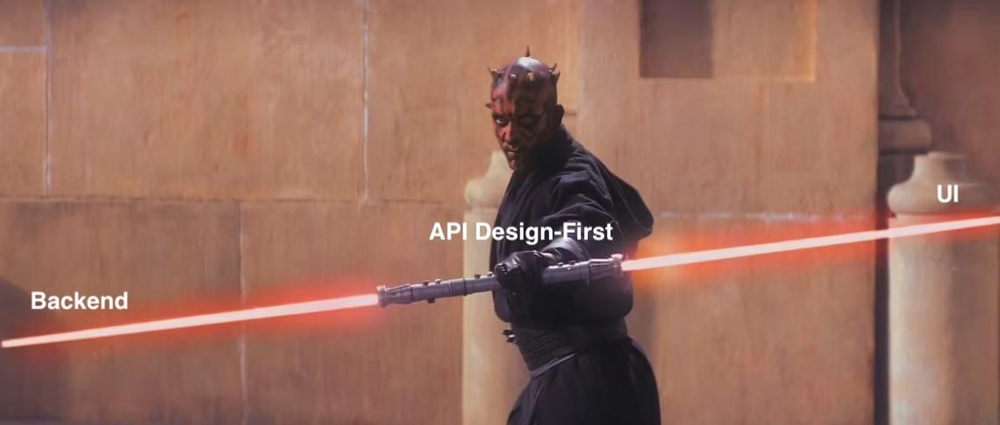

API Design-First
This article is a part of the API Design series, where I will uncover API design concepts for my non-technical peers. You don't need to be a developer or an architect to participate to design or even build an API, but there is something you should learn to succeed.
So we start with API design-first, which takes the opportunity to democratize the API development process.
API Definition
Let's take a step back to explore the term "API definition." I will take some points from my "Definition of API requirements" essay to keep all the needed information in one text.
So, the API definition is a documented API contract - an agreement about expected input and outcome between you (API provider) and your clients who consume your API. API communication is formalized with the contract documented in a specific format. It covers what data should be sent to a particular web address and what is expected to return as a successful or failed response.
Many types of such formats are usually technically-driven. OpenAPI (previously known as Swagger) is the most common way to specify RESTful API, so that I will refer to it. You should study that format if you need to work with APIs. OpenAPI is not covered here, but later I will guide you on how to approach that study.
So in our case, a JSON or YAML file with the contents aligned with OpenAPI specification acts as the API definition. The definition does not mean implementation. Our API can be defined on "paper" but does not yet exist as a deployed code running on a web server. It is important to separate those meanings like we separate requirements as a description of a system from the actual implementation.
What API design-first means
API definition has two dimensions:
Documentation: You can have API implementation with code and then autogenerate API definition to reflect the actual implementation. It is also called "code-first" and is a more traditional approach.
Specification: You can design API definitions with your hands in a Notepad or use advanced tools to produce such machine-readable formats as OpenAPI. That allows autogenerating code for both the client and server sides. Or you can still develop it manually. Both ways lies in the concept we call "API design-first."
API definition can mediate between business logic, domain models, and UI. It can't cover them all, but there is no need for that. That can be considered a business analysis (BA) artifact, which may better transcribe business-to-system requirements than several written text lines.

Designing API definition helps to crystalize the data model and the operations to make your application functional. It is a ready-made contract between the backend and UI or API consumers. Such traditional BA artifacts as use cases, Entity-Relationship diagrams, and UI mockups are still required to specify the system requirements.
I am usually advocating to keep a separate line between Requirements and Design. API definition lies between "What?" and "How?". It does not answer those questions for an entire system. But that might be beneficial if API is crucial in delivering value to your customers.
Rise of API design-first
I think it is related to the rising popularity of the "API economy." It is climbing to the "hype" train. I googled "Forbes about API," and on the first page, I found six(!) Forbes articles about APIs published in 2022 (1, 2, 3, 4, 5, 6). Forbes as a media and API are very distant from each other worlds. It proves the increasing interest in everything related to APIs.
Thus, API design-first is also a part of this trend. Now we talk more about APIs and try to revisit some traditional approaches. There is a new market of tools to replace regular API development or integration with more user and business-friendly solutions.
When you don't need this
To fully understand the concept, you need to focus on its disadvantages more than its advantages. There is a bulletproof fact: despite trends, the industry has been developing software without API design-first for dozens of years and will continue doing that.
The API design-first approach can be an overhead in a case when:
1) There are internal APIs only / no time for that
I can hardly imagine a viable system without an API exposed to 3rd parties. But if we consider this case, API design-first is hard to sell here. If API is only used by the UI application, why do you need to spend time designing API with stakeholders before coding? Especially when we are talking about small or medium-sized applications.
Also, you need more time to design API. For sure, it is an overhead. If it is outside your initial plans, then it is unlikely to spend any effort on that. That might end up as a technical debt. But there is always a price we pay for the rush.
2) No API conventions on the team or organizational level
Having API conventions is crucial in any case: whether you design or code first. Without the conventions, you are doomed to redesign API repeatedly, trying to match pieces of broken glass. For an API in production that might end up with breaking changes. And no one likes breaking changes (I wrote the essay dedicated to that).
3) Lacks stakeholder involvement/lack of knowledge in API
API design-first is about collaboration among stakeholders. If API is not a priority for them, then the API design phase can be delegated to developers while implementing those APIs (or a little prior).
Another case is when stakeholders are willing to participate but can't speak "API language." OpenAPI, for instance, can be used as such a language. But learning a language needs personal effort. Not talking about mastering the OpenAPI specifics, just understanding the basic concepts (grammar) and the ability to express yourself and understand others.
Thus, if stakeholders want to be involved in the API design but do not speak an API language or speak another API language (e.g., SOAP), there should be time dedicated to learning.
4) (Very) extensive system
To finalize some skepticism, applying the design-first approach for a very extensive system that may include hundreds of microservices is not reasonable. Spending time designing the API of each specific microservice is not the best idea. You'd better spend time creating templates or boilerplates for API facades. Some business-sensitive APIs can be designed, considering the specifics: security, customer needs, and government regulations.
Where to learn about designing API
Whether you have decided to apply the API design-first or are just interested in learning more about API, there is a proven-by-me list of resources to help you:
- A brilliant free course published at https://idratherbewriting.com. It is designed primarily for technical writers, but this material suits any non-developer role. It has become a part of the mandatory onboarding for Business Analysts and even UX designers in my team. The course itself is immense. You will be enough with the first five chapters. I am most grateful to the author, Tom Johnson, for his great work.
- If you want to dive deeper into the topic, I can recommend "The API" by Sergey Konstantinov. It is free and available both in English and Russian. The primary audience is API developers, but it is also good reading for System Analysts.
- Code Academy has a paid course, "API Development with Swagger and OpenAPI".
- There is also a book titled "Continuous API Management". I have read the first half of the 1st edition. Still, this is a more general reading for managers mainly. I will resume reading 2nd edition.
- And OpenAPI specification itself. The latest version on December 2022 is 3.1.0, even though it has yet to be very common. OpenAPI 3.0 and its previous iteration, Swagger 2.x, are still used in the industry.
- As a prerequisite, you must learn the basics of JSON, YAML, and XML formats. You'd better have a general notion of primitive data types: strings, integers, arrays, etc. There is plenty of available videos covering those topics on Youtube.
Outro
I decided to explore that topic as I followed API design-first for one of my side projects for a simple reason: autogenerate client and server-side code. As I am not a developer, that helps me to save a lot of effort.
In the following essay, I review some free low-code and no-code solutions for API design.
Take care,
Ilya
Image by Merlin Lightpainting from Pixabay